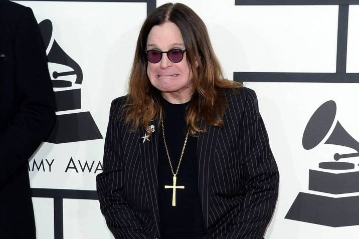

Megadeth es una banda estadounidense de thrash metal, formada en Los Ángeles, California. Fue creada en 1983
por Dave Mustaine (vocalista, guitarrista y compositor principal), después de que fuera expulsado de
Metallica, donde ocupaba el puesto de guitarrista principal. Es comúnmente mencionada como una de los cuatro
grandes del thrash metal, junto a Metallica, Slayer y Anthrax.
"Ozzy Osbourne"

John Michael "Ozzy" Osbourne (Birmingham, 3 de diciembre de 1948) es un cantautor, compositor y actor
británico, que se
hizo famoso primero con Black Sabbath y luego con una carrera en solitario muy exitosa, tanto que fue
reconocido por
muchos como "el padrino del 'heavy metal".
Por su música y su carisma sobre el escenario, Ozzy es considerado un innovador del género. El cantante
también es conocido por sus actitudes transgresoras, que a menudo han despertado la polémica de grupos
religiosos y conservadores, y por sus excesos, que a menudo lo han expuesto a problemas con la ley. A lo
largo de su carrera se ha ganado varios apodos; los más conocidos son "El Loco", "El Padrino del Heavy
Metal", "El Príncipe de las Tinieblas" o "The Oz". En su carrera en solitario, Ozzy Osbourne ha vendido más
de 50 millones de discos en todo el mundo. 100 millones de discos en total, contando su carrera en Black
Sabbath, desde 1970 hasta 1978.